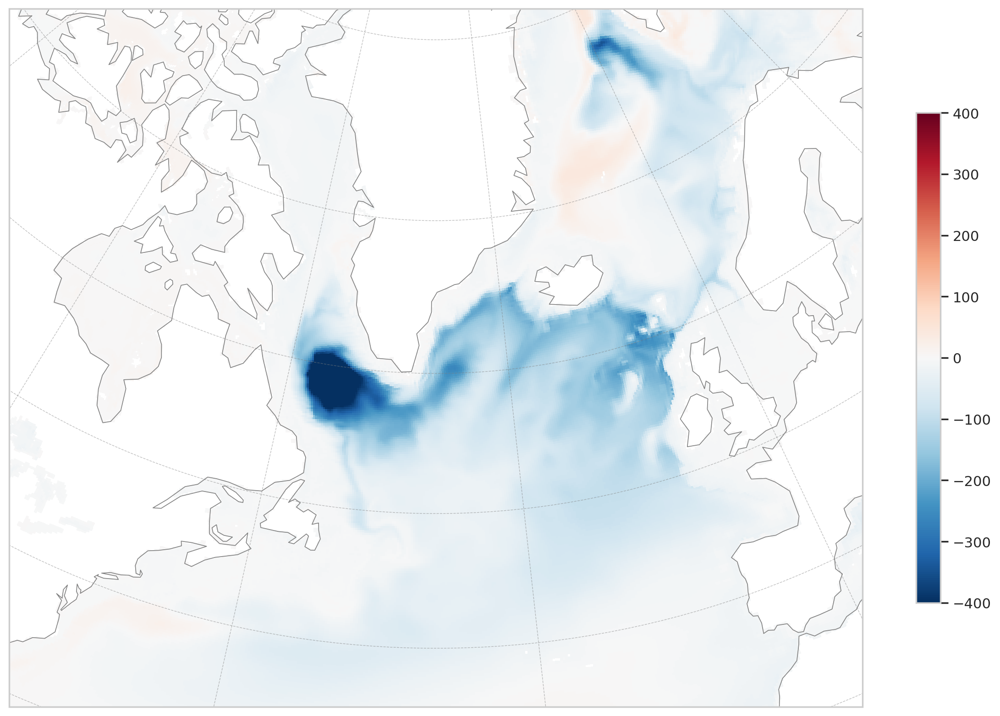
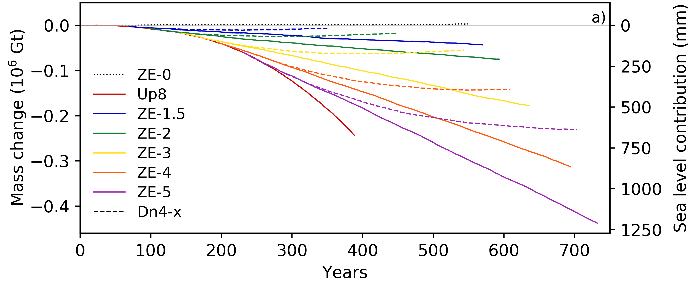

The PROMOTE project
The PROMOTE project (Progressing Earth System Modelling for Tipping Point Early Warning Systems) is funded under ARIA’s 'Forecasting Tipping Points' programme. The aim of the programme is to explore the feasibility of, and to potentially build, an actionable Early Warning System (EWS) for tipping of the North Atlantic Subpolar Gyre (SPG) or the Greenland Ice Sheet (GrIS). An important aspect of an ‘actionable’ EWS is that it needs to specify what it is warning of, i.e. the impacts of tipping. Clearly, the aim of an EWS is tremendously challenging and raises a range of questions, for example about the capabilities of Earth System Models (ESMs) to represent tipping processes and impacts.


A key aim of PROMOTE is to develop the UK Earth System Model (UKESM) to a point where it could credibly underpin an EWS, by becoming part of a decadal prediction system initialised with observations, or by providing simulated manifestations of tipping that can be used to train statistical (AI/ML) models for tipping prediction, or by providing boundary conditions for stand-alone simulations of the Greenland Ice Sheet (Wood et al., 2026). One goal of PROMOTE is therefore to assess the plausibility of tipping processes and physical/biogeochemical impacts of tipping as represented in UKESM and its component models. These assessments are carried out under the cross-cutting work package 2. Plausibility will be assessed through a combination of model-observation comparisons, model-model comparisons, and process understanding. The use of observations is strongly encouraged.
PROMOTE Analysis Sprint
The PROMOTE Analysis Sprint is a week of focussed model evaluation by the PROMOTE team to advance these assessments. The week can be used to continue analysis work that is already progressing or to start work on new topics and new collaborations.
Below is a list of topics that are in scope for the sprint — other ideas are, of course, very welcome as long as they align with the broad aims of work package 2 around tipping processes and impacts:
- Evaluation of processes such as
- Regional warming and melting leading to GrIS mass loss
- Freshwater and heat transport into the SPG including overflows
- Deep and upper ocean mixing in the SPG
- Vertical profiles of temperature, salinity, density (e.g. to interpret convective mixing)
- Budgets for the SPG region or the GrIS (heat, freshwater)
- SPG gyre circulation and boundary currents
- Eddy-mixing, particular around boundary currents leading to restratification
- Sea-ice cover
- Air - sea - ice interactions more generally
- Evaluation of tipping impacts on weather extremes and ocean ecosystems such as
- Storms
- Extreme rainfall
- Marine and terrestrial heatwaves
- Droughts
- Sea level rise
- Biogenic nutrients and primary productivity
- Impacts on ecosystems such as North Atlantic bloom
- Analyses comparing different UKESM or component model versions (e.g. resolution) and consequences for identifying tipping events or the impacts of tipping
UKESM and its component models are in scope for analysis, such as UKESM experiments from the TerraFIRMA project and the CANARI HadGEM3 Large Ensemble.
Participants list
The participants list can be found here.
References
[1] Smith, R. S., et al., 2026: Response of ice sheets, sea-ice and sea level in climate stabilisation and reversibility simulations using a state-of-the-art Earth System Model. Earth System Dynamics, 17, 475–493, https://doi.org/10.5194/esd-17-475-2026.
[2] Wood, R., et al., 2026: Use of ESMs for early warning of tipping points in the North Atlantic Subpolar Gyre and Greenland Ice Sheet. Policy brief, PROMOTE Milestone 1.2, https://doi.org/10.5281/zenodo.21223566